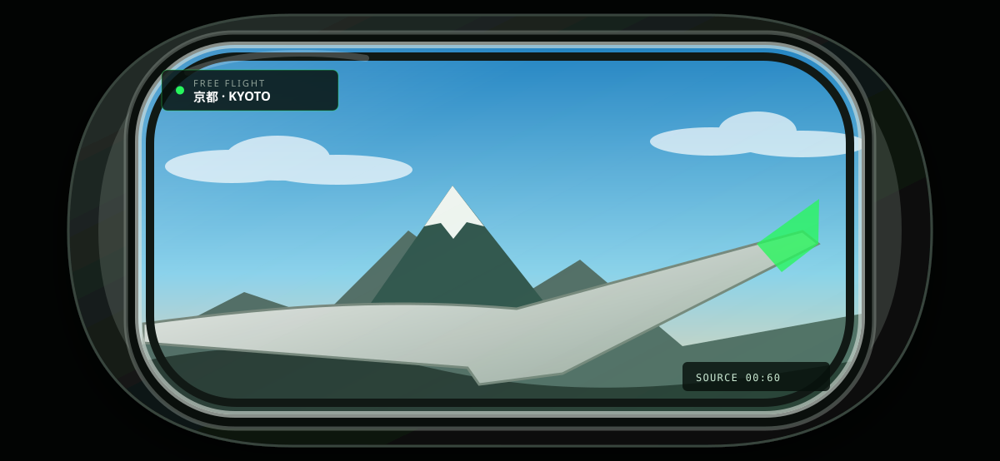

01
標準桌曆暨時鐘模式
圓角方形刻度鐘、連續指針、星期一為首欄的六列月曆，以及清楚的今天標示。
Windows 10 x64 · v0.4.0
Windows 螢幕保護程式，提供標準桌曆暨時鐘、離機作業番茄鐘與日本旅行三種模式。 前兩種模式完全離線；日本旅行模式透過 WebView2 顯示經健康檢查的即時影像。
Windows 10 x64 的建置、來源探測與非互動 smoke test 已通過；即時播放器的長時間人工觀察尚未在遠端工作階段執行。 需要 UAC 的完整安裝矩陣未在遠端工作階段執行，Windows 11 也尚未驗證。 下載後請先核對 SHA-256；Windows 可能顯示未驗證發行者或 SmartScreen 提示。
DISPLAY MODES
01
圓角方形刻度鐘、連續指針、星期一為首欄的六列月曆，以及清楚的今天標示。

02
六位七段數字搭配沙漏與進度線，最後十秒顯示警示，歸零後以四次閃爍完成。

03
可選「自在飛行」或暖色木質的「列車旅行」場景，兩者都會標示目前地區；播放開始後預抓下一來源，滿 60 秒時隨機切換。
本站僅顯示專案自製 SVG 示意，不載入第三方影片。
支援多螢幕、負座標、每螢幕 DPI、橫直版與極小預覽。
桌曆時鐘與番茄鐘不連網；只有全螢幕日本旅行模式會連線至 tw.live 與 YouTube。
主螢幕只建立一個 WebView2 播放器；來源失效時切換或稍後重試，Runtime 不可用時保留本機靜態畫面。
DOWNLOAD
選擇安裝程式，或直接取得獨立 .scr 與校驗清單。
檔案由本站直接提供，無需 GitHub 帳號、登入或雙因素驗證。
INSTALL
下載 Setup 與 SHA256SUMS.txt，以 PowerShell 的 Get-FileHash 核對 SHA-256。
Setup 需要系統管理員權限，並將唯一的 .scr 安裝到 64 位元 System32。
在 Windows 螢幕保護程式設定選取本程式，再調整模式、旅行場景、顏色、字型與等待時間。旅行模式需已安裝 Microsoft Edge WebView2 Runtime。
原生設定對話框顯示「KOMSMOS TOOLKIT 探真拓知酷」小圖形標示；按下「確定」才寫入目前使用者的設定。設定與預覽畫面本身不連網。
COMPATIBILITY
22H2 build 19045 的建置、來源探測與非互動驗證。
遠端測試刻意不顯示 UAC，也不寫入 System32。
目前沒有 Windows 11 開發環境，保留為後續相容性驗證。
OPEN SOURCE
Rust 1.97.1、Win32/GDI、WebView2、Inno Setup 6.7.3。遠端驗證只執行不顯示 UI、不安裝、不觸發 UAC 的測試路徑。